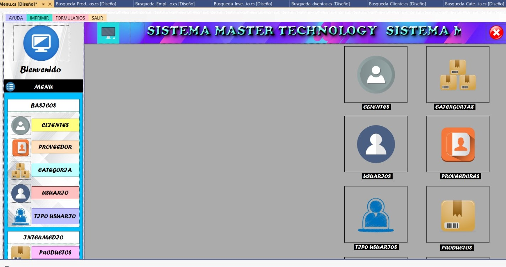
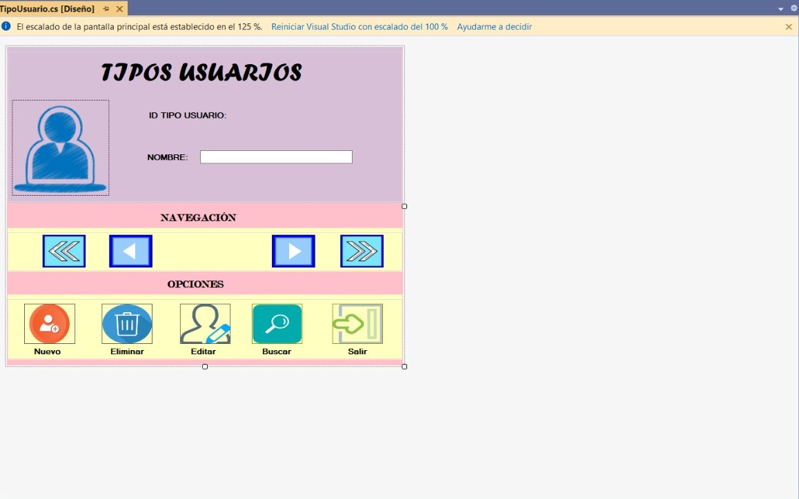
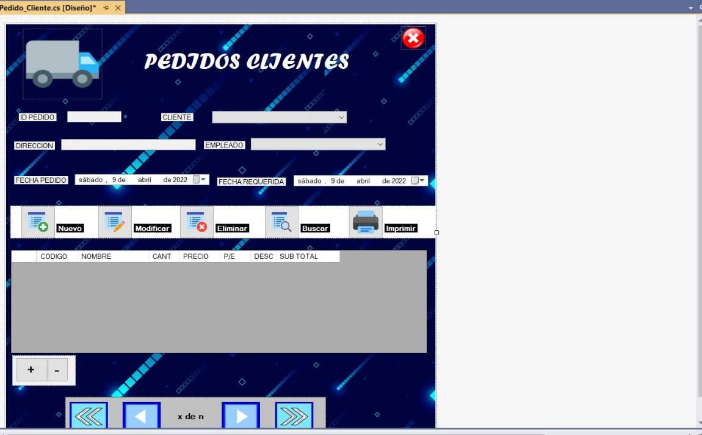
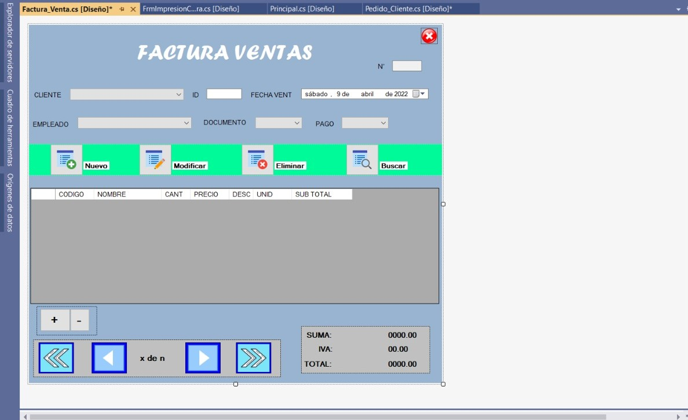
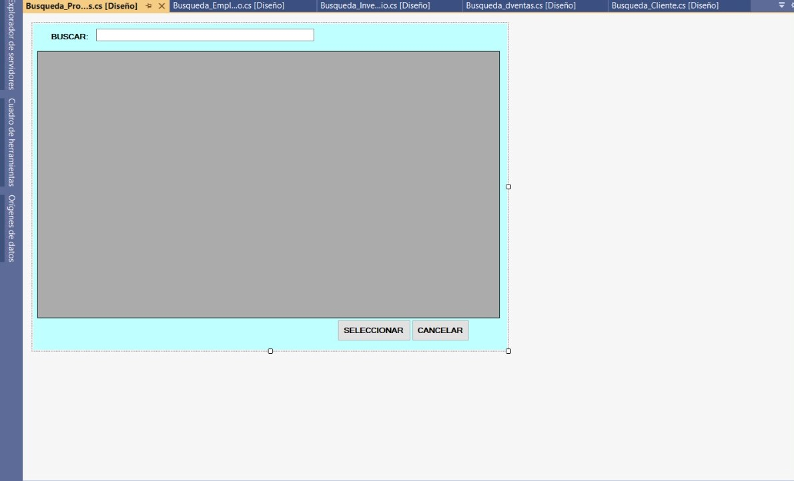

Sistema de Facturacón
    El sistema se basa en el registro de datos, ya sea de productos alimenticios, registro de artículos para hogares o cualquier tipo de registro que deseamos realizar, además este tiene la facultad de poder realizar una factura del registro o de los diferentes productos que deseamos imprimir.
- Objetivo: Realizar una aplicación de escritorio en la cual puedan realizarse registros de todo tipo, al igual que esta permita realizar una factura mostrando un informe detallado de lo que sea registrado.
- Descripción del proceso de trabajo: Se estableció un horario para los miembros del equipo para poder realizar los diferentes avances al proyecto.
- Rol y responsabilidades: Mi rol fue de programador BackEnd y responsabilidades fue hacer las historias de usuarios que se me asignaban para la realización de proyecto.
- Lenguaje de programación usados: C#